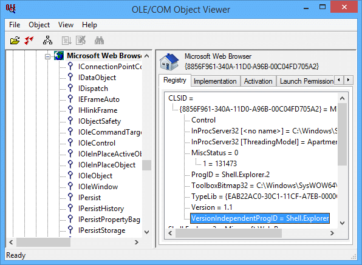
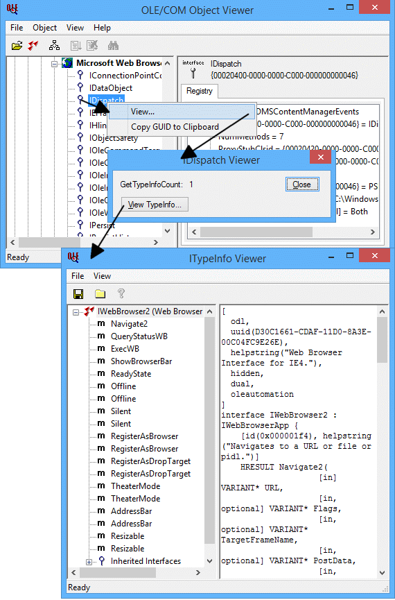

Краткое введение.
COM расшифровывается как "Component Object Model". Это способ Microsoft связывать программное обеспечение через общий интерфейс. Эти интерфейсы определяются в COM-объекте.
До COM нужно было знать точную реализацию программы, чтобы "общаться" с ней. С COM можно "разговаривать" с её объявленными объектами. Достаточно знать имена используемых объектов и их "свойства" и "методы".
Это две базовые характеристики объекта. "Свойство" можно представлять как хранилище данных объекта. "Метод" – как внутренний вызов функции, выполняющий что-то с данными.
Зависит от задачи. У AutoIt много встроенных функций и огромная библиотека UDF. Большую часть кода можно написать на них. Однако если нужно особое "взаимодействие" с другими приложениями, использование COM может сэкономить несколько строк скрипта. Помните: наличие COM-объектов СИЛЬНО зависит от ОС И установленного ПО. Все примеры ниже протестированы на "чистой" Windows XP Professional с Microsoft Office 2000.
Допустим, нужно свернуть все открытые окна. Это можно сделать обычными функциями AutoIt вроде WinList и WinSetState. Однако две строки COM-кода дают тот же результат:
Local $oShell = ObjCreate("shell.application")
$oShell.MinimizeAll
Заметка: после появления функции WinMinimizeAll() в AutoIt этот пример уже не самый короткий способ свернуть все окна.
В первой строке создаётся новый объект "shell.application". Это внутренний объект Windows, определённый в shell32.dll. Указатель на новый объект присваивается переменной $oShell. С этого момента $oShell – переменная-объект.
Во второй строке к объекту oShell применяется метод "MinimizeAll". Это свернёт все окна.
Во всех версиях Windows есть огромное число внутренних объектов разного назначения. У приложений вроде Excel или Word также есть собственные наборы объектов.
Однако иногда трудно получить список всех существующих в системе объектов с соответствующими свойствами и методами. Поиск на Microsoft.com или Google.com может дать подсказки о нужном объекте "X".
Например, информацию об объекте "shell.application" можно найти здесь:
http://msdn.microsoft.com/en-us/library/bb774094.aspx
Для просмотра всех установленных в системе объектов очень полезен инструмент "OLE/COM Object Viewer". О нём – в отдельном разделе ниже.
Ещё пример. Хотим получить HTML-исходник определённой веб-страницы. Можно использовать встроенную функцию InetGet(), чтобы сохранить результат в файл, а затем прочитать его через FileRead(). Но следующие строки делают то же самое:
Local $oHTTP = ObjCreate("winhttp.winhttprequest.5.1")
$oHTTP.Open("GET", "http://www.AutoItScript.com")
$oHTTP.Send()
$HTMLSource = $oHTTP.Responsetext
(Строковая) переменная $HTMLSource теперь содержит полный HTML-код главной страницы AutoItScript.com (точнее, верхнего HTML-фрейма).
(Информацию об объекте "winhttp.winhttprequest" можно найти здесь:
http://msdn.microsoft.com/en-us/library/aa384106.aspx )
Учтите: наличие объектов зависит от ОС компьютера и установленных программ. Например, объект winhttp.winhttprequest.5.1 существует только на компьютерах, где установлен как минимум Internet Explorer 5. Распространяя скрипты с COM-объектами, убеждайтесь, что объекты есть на всех компьютерах.
Переменные-объекты ведут себя немного иначе, чем другие переменные AutoIt. Объект – не настоящее значение, а "указатель" на что-то вне скрипта. Поэтому над переменными-объектами нельзя выполнять арифметические операции и сравнения. При присваивании переменной-объекту другого значения "указатель" автоматически освобождается. Например, объект можно принудительно удалить, присвоив ему любое числовое или строковое значение.
Local $oHTTP = ObjCreate("winhttp.winhttprequest.5.1") ; Объект создан
$oHTTP = 0 ; Объект удален
Объекты не обязательно удалять по завершении. При выходе из скрипта AutoIt пытается освободить все активные ссылки на объекты, созданные в скрипте. То же происходит, если внутри функции была объявлена локальная переменная-объект и функция завершилась.
Очень популярное применение COM – "автоматизация" программ. Вместо обычных функций AutoIt вроде Send() или WinActivate() можно использовать объекты, определённые внутри программы.
Вот пример "автоматизации" Microsoft Excel:
Local $oExcel = ObjCreate("Excel.Application") ; Создать объект Excel
$oExcel.Visible = 1 ; Позволить Excel показать себя
$oExcel.WorkBooks.Add ; Добавить новую рабочую книгу
$oExcel.ActiveWorkBook.ActiveSheet.Cells(1, 1).Value = "Text" ; Заполнить ячейку
Sleep(4000) ; Показать результаты на 4 секунды
$oExcel.ActiveWorkBook.Saved = 1 ; Симулировать сохранение рабочей книги
$oExcel.Quit ; Выйти из Excel
Сложность управления другими программами зависит от самой программы, а не от скрипта AutoIt. Если что-то работает не так, как ожидалось, обратитесь к документации приложения, а не к справке AutoIt.
В AutoIt предусмотрены два специальных оператора для работы с COM:
With/EndWith и цикл For/In/Next.
Оператор With/EndWith не добавляет функциональности, но делает скрипт проще для чтения. Например, предыдущий пример с Excel можно записать так:
Local $oExcel = ObjCreate("Excel.Application") ; Создать объект Excel
With $oExcel
.Visible = 1 ; Позволить Excel показать себя
.WorkBooks.Add ; Добавить новую рабочую книгу
.ActiveWorkBook.ActiveSheet.Cells(1, 1).Value = "Text" ; Заполнить ячейку
Sleep(4000) ; Показать результаты на 4 секунды
.ActiveWorkBook.Saved = 1 ; Симулировать сохранение рабочей книги
.Quit ; Выйти из Excel
EndWith
В этом примере экономия текста невелика, но если объект использует длинные цепочки свойств/методов, оператор With может сильно сократить запись.
Цикл FOR...IN нужен при работе с коллекциями. Коллекция – особый тип объекта, состоящий из нескольких под-объектов. Можно представлять их как массивы (на самом деле оператор For..In также работает с переменными-массивами).
Ниже пример цикла For..In. В этом примере используется обычный AutoIt-массив, так что к COM он не имеет отношения – просто демонстрация принципа:
#include <MsgBoxConstants.au3>
Local $sString = "" ; Строка для отображения
Local $aArray[4]
$aArray[0] = "A" ; Мы заполняем массив
$aArray[1] = 0 ; с несколькими
$aArray[2] = 1.3434 ; разными
$aArray[3] = "Example Text" ; примерными значениями.
For $iElement In $aArray ; Здесь начинается...
$sString &= $iElement & @CRLF
Next
; Показать результаты
MsgBox($MB_OK, "For..In Array Example", "Result: " & @CRLF & $sString)
В большинстве случаев получить элементы коллекции "обычными" методами объекта нельзя. На языке COM говорят, что их нужно "перечислить". Здесь и приходит на помощь цикл For..In.
Пример с Excel ниже проходит по ячейкам A1:O16 на текущем активном листе. Если значение одной из ячеек меньше 5, код заменяет его на 0 (ноль):
Local $oExcel = ObjCreate("Excel.Application") ; Создать объект Excel
$oExcel.Visible = 1 ; Позволить Excel показать себя
$oExcel.WorkBooks.Add ; Добавить новую рабочую книгу
Local $aArray[16][16] ; Эти линии
For $i = 0 To 15 ; всего лишь
For $j = 0 To 15 ; пример для
$aArray[$i][$j] = $i ; создания некоторого
Next ; содержимого ячейки.
Next
$oExcel.activesheet.range("A1:O16").value = $aArray ; Заполнить ячейки примерными числами
Sleep(2000) ; Подождать перед продолжением
For $iCell In $oExcel.ActiveSheet.Range("A1:O16")
If $iCell.Value < 5 Then
$iCell.Value = 0
EndIf
Next
$oExcel.ActiveWorkBook.Saved = 1 ; Симулировать сохранение рабочей книги
Sleep(2000) ; Подождать перед закрытием
$oExcel.Quit ; Выйти из Excel
Следующие возможности AutoItCOM требуют глубокого знания COM-событий и обработки COM-ошибок.
Если вы новичок в COM-программировании, сначала прочитайте хорошую документацию по COM.
"Библией" COM считается книга "Inside OLE 2" Крейга Брокшмидта (Microsoft Press).
Можно также найти COM-материалы в интернете (не связанные с AutoIt):
http://msdn.microsoft.com/en-us/library/ms694363.aspx (введение)
http://www.garybeene.com/vb/tut-obj.htm (об объектах в Visual Basic)
http://java.sun.com/docs/books/tutorial/java/concepts/ (использование объектов в Java)
http://msdn.microsoft.com/en-us/library/windows/desktop/ms686915.aspx (события объектов в C++)
http://www.garybeene.com/vb/tut-err.htm (обработка ошибок в Visual Basic)
Обычная COM-автоматизация использует в основном одностороннюю связь. Вы "спрашиваете" у объекта значение свойства или результат метода. Но COM-объект может "отвечать" вашему скрипту, когда ему удобно.
Это очень удобно, когда нужно дождаться какого-то COM-действия.
Вместо того чтобы писать цикл, опрашивающий объект – не произошло ли что-то интересного, можно дать объекту самому вызывать определённую UDF в вашем скрипте. Тем временем скрипт может (почти) одновременно заниматься другими делами.
Не все объекты поддерживают события. Внимательно читайте документацию объекта на предмет поддержки событий.
Если поддерживает – нужно знать тип событий. AutoItCOM может принимать только события типа "dispatch".
Наконец, нужно знать имена событий, которые объект может генерировать, и их аргументы (если есть).
Только имея всю эту информацию, можно начинать собирать AutoIt-скрипт с COM-событиями.
Ниже фрагмент скрипта, демонстрирующий приём событий от Internet Explorer:
Local $oIE = ObjCreate("InternetExplorer.Application.1") ; Создать объект Internet Explorer
Local $oEventObject = ObjEvent($oIE, "IEEvent_", "DWebBrowserEvents") ; Начать получение событий.
$oIE.url = "http://www.autoitscript.com" ; Загрузить примерную веб-страницу
; С этого момента объект $oIE генерирует события во время загрузки веб-страницы.
; Они обрабатываются в функциях событий, показанных ниже.
; Здесь вы можете позволить скрипту ждать, пока пользователь захочет завершить.
...(your code here)...
$oEventObject.stop ; Скажите IE, что мы хотим перестать получать события
$oEventObject = 0 ; Убить объект события
$oIE.quit ; Выйти из IE
$oIE = 0 ; Удалить IE из памяти (не совсем необходимо)
Exit ; Конец основного скрипта
; Несколько функций событий Internet Explorer.
;
; Для полного списка функций событий IE см. документацию MSDN WebBrowser на:
; http://msdn.microsoft.com/en-us/library/aa768400.aspx
Func IEEvent_StatusTextChange($sText)
; В полном скрипте (см. ссылку ниже) мы показываем содержимое в поле редактирования GUI.
GUICtrlSetData($GUIEdit, "IE Status text changed to: " & $sText & @CRLF, "append")
EndFunc ;==>IEEvent_StatusTextChange
Func IEEvent_BeforeNavigate($sURL, $iFlags, $sTargetFrameName, $dPostData, $sHeaders, $bCancel)
; В полном скрипте (см. ссылку ниже) мы показываем содержимое в поле редактирования GUI.
; Примечание: объявление отличается от объявления на MSDN.
GUICtrlSetData($GUIEdit, "BeforeNavigate: " & $sURL & " Flags: " & $iFlags & @CRLF, "append")
EndFunc ;==>IEEvent_BeforeNavigate
Полный скрипт см. здесь.
Главная строка этого скрипта: $EventObject = ObjEvent ($oIE, "IEEvent_", ...).
Эта функция берёт объект $oIE и перенаправляет его события в AutoIt-функции, имена которых начинаются на IEEvent_. Третий параметр необязателен. Он используется, когда у объекта несколько событийных интерфейсов и вы не хотите, чтобы AutoIt выбирал один автоматически.
За постоянное перенаправление отвечает объект $EventObject. К этой переменной не требуется дальнейшего внимания, пока вы не захотите остановить события.
Чтобы прекратить перенаправление событий, нельзя просто удалить переменную, например $EventObject = "". Дело в том, что "вызывающий" объект всё ещё держит ссылку на эту переменную и не отпустит её, пока сам объект не завершится. Можно решить проблему уничтожением "вызывающего" объекта, но можно и сообщить объекту, что вы не хотите получать события, через $EventObject.Stop. После этого можно (необязательно) уничтожить событие, присвоив ему любое значение, например $EventObject = "".
Если вы знаете имена событий, которые генерирует $oIE, реализовать интересующие события можно созданием AutoIt-UDF с именами IEEvent_Eventname(необязательные аргументы). Обязательно используйте правильное число аргументов в правильном порядке, как указано для именно ЭТОЙ функции события. Иначе можно получить неожиданные значения.
Не обязательно реализовывать ВСЕ функции событий. Нереализованные просто игнорируются.
Дополнительные примеры скриптов с COM-событиями можно найти по этой ссылке.
Ограничения COM-событий в AutoIt
Некоторые объекты (например, "WebBrowser") передают аргументы в свои событийные функции "по ссылке". Это позволяет пользователю менять эти аргументы и возвращать их объекту. Однако AutoIt использует собственную схему переменных, несовместимую с COM-переменными. Это значит, что все значения из объектов преобразуются в AutoIt-переменные, теряя ссылку на исходный участок памяти. Возможно, в ближайшем будущем мы решим это ограничение!
Использование COM без правильной обработки ошибок может быть очень коварным. Особенно если вы не знакомы с используемыми объектами.
Только если нет способа предотвратить COM-ошибку, можно установить "обработчик ошибок", в котором действовать после ошибки. Это не способ заставить багованный скрипт работать правильно. Также он не ловит не-COM-ошибки скрипта (например, ошибки объявления и синтаксиса).
Обработка ошибок реализована так же, как обычное COM-событие, через ObjEvent() и пользовательскую функцию COM-события. Единственное отличие – в качестве имени объекта используется фиксированная строка "AutoIt.Error".
Пример:
#include <MsgBoxConstants.au3>
; Установить пользовательский обработчик ошибок
; если используется в функции, обработчик автоматически отключается при возврате.
; Если не установлено, скрипт будет завершен при ошибке
Local $oMyError = ObjEvent("AutoIt.Error", "ErrFunc")
; Выполнить преднамеренный отказ (объект не существует)
Local $oIE = ObjCreate("InternetExplorer.Application")
$oIE.visible = 1
$oIE.bogus
If @error Then
; проверка @error требует пользовательского обработчика ошибок
MsgBox($MB_OK, "Error", "There was an error on the previous line.")
EndIf
MsgBox($MB_OK, "", "Script exit") ; эта строка не будет выполнена, если обработчик не установлен
Exit
; Это пользовательский обработчик ошибок
Func ErrFunc($oError)
MsgBox($MB_OK, "We intercepted a COM Error !", _
"Number: 0x" & Hex($oError.number, 8) & @CRLF & _
"Description: " & $oError.windescription & _
"At line: " & $oError.scriptline)
EndFunc ;==>ErrFunc
У обработчика событий ошибок есть особенность – возвращаемый им объект. Это AutoIt-объект ошибки с полезными свойствами и методами. Его реализация частично основана на объекте "Err" в VB(script):
Свойства AutoIt-объекта ошибки:
| .number | Значение Windows HRESULT от COM-вызова. |
| .windescription | Текст FormatWinError(), полученный из .number. |
| .source | Имя объекта, сгенерировавшего ошибку (содержимое ExcepInfo.source). |
| .description | Описание ошибки от объекта-источника (содержимое ExcepInfo.description). |
| .helpfile | Файл справки объекта-источника для ошибки (содержимое ExcepInfo.helpfile). |
| .helpcontext | Идентификатор контекста справки объекта-источника (содержимое ExcepInfo.helpcontext). |
| .lastdllerror | Число, возвращённое GetLastError(). |
| .scriptline | Строка скрипта, на которой возникла ошибка. |
Заметка для авторов UDF
Можно иметь сколько угодно обработчиков событий COM-ошибок. Вызывается последний зарегистрированный и ещё живой объект.
Однако существующий обработчик ошибок нельзя остановить, не освободив назначенную ему переменную. Это происходит, когда переменная выходит из области видимости или ей присваивается новое значение.
"OLE/COM Object Viewer" – очень удобный инструмент для просмотра всех COM-объектов, установленных в системе. Он входит в Windows Server 2003 Resource Kit (подходит для Windows XP и выше) и доступен для бесплатного скачивания: http://www.microsoft.com/en-us/download/details.aspx?id=17657
Установка программы немного нестандартная. Ярлык в меню "Пуск" она не создаёт. Вместо этого файл oleview.exe устанавливается в каталог C:\Program Files\Resource Kit (по умолчанию).
При запуске oleview.exe на некоторых системах появится сообщение об отсутствии файла iviewers.dll. Этот файл нужен, но, странным образом, не включён в свежую сборку. Получить эту DLL можно из более старой версии oleview.exe: http://download.microsoft.com/download/2/f/1/2f15a59b-6cd7-467b-8ff2-f162c3932235/ovi386.exe. По умолчанию она ставится в каталог C:\MSTOOLS\BIN. Нужен только файл iviewer.dll. Скопируйте его в каталог, где лежит oleview.exe, и зарегистрируйте командой regsvr32 iviewers.dll.
Пример с Oleviewer. Запустите его и пройдите по дереву: Object Classes->Grouped by Component Category->Control->Microsoft Web Browser.

В левой панели видны все COM-интерфейсы, определённые для этого объекта. О них – позже. Внимательно посмотрите на правую колонку. В ней много информации об объекте, полезной для AutoIt-скрипта. Самое важное – "VersionIndependentProgID". Именно это имя передаётся в ObjCreate(), ObjGet() или ObjEvent(). Кроме того, тут указан каталог и имя файла, содержащего объект. Это может быть EXE-, DLL- или OCX-файл. InProcServer32 означает, что объект работает в том же потоке, что и скрипт (внутрипроцессно). LocalServer32 означает, что объект работает как отдельный процесс. У объекта также должна быть библиотека типов (строки после "TypeLib="), иначе его нельзя использовать в AutoIt-скрипте.
Интерфейсы в левой панели предоставляют разные способы взаимодействия с объектом. Одни нужны для хранения (IStorage, IPersist), другие – для встраивания в GUI (IOleObject, IOleControl). AutoIt использует для автоматизации интерфейс IDispatch. Этот интерфейс "раскрывает" все скриптируемые методы и свойства, поддерживаемые объектом. Если у объекта нет интерфейса IDispatch, использовать его в AutoIt-скрипте нельзя.
Давайте взглянем на этот интерфейс. Щёлкните правой кнопкой по имени IDispatch и выберите в контекстном меню "View...". Затем нажмите кнопку "View TypeInfo...". (Примечание: если кнопка серая, значит вы не зарегистрировали файл iviewers.dll – см. выше – либо у объекта нет библиотеки типов.)

Окно "ITypeInfo Viewer" показывает всю информацию, предоставленную для объекта; она может быть неполной. Если разработчик не включил файл справки, вы увидите только имена методов/свойств и больше ничего. Однако библиотека типов "Microsoft Web Browser" довольно обширная. Просто щёлкните элемент в левой панели – описание появится справа. Иногда для получения дополнительных методов объекта нужно пройтись по "Inherited Interfaces".
Синтаксис описанных методов/свойств – в стиле C/C++. Свойство, описанное как "HRESULT Resizable([in] VARIANT_BOOL pbOffline)", в AutoIt пишется так: $Resizable=$Object.Resizable ($Object содержит объект, созданный через ObjCreate или ObjGet).
Эти термины часто путают с COM, но они означают разное:
OOP = объектно-ориентированное программирование. Техника, при которой программные компоненты собираются из переиспользуемых блоков – объектов.
DDE = Dynamic Data Exchange.
Можно сказать, что это предшественник COM. Использовал IPC для передачи информации и команд между разными приложениями.
OLE = Object Linking and Embedding.
В первой версии OLE был расширенной версией DDE для "встраивания" данных одной программы в другую. Текущее поколение OLE построено поверх COM и является частью ActiveX.
Automation = способ манипулирования объектами другого приложения. Используется в OLE, ActiveX и COM.
ActiveX = OLE следующего поколения с Automation. Изначально разрабатывался прежде всего для взаимодействия приложений по сети (особенно веб-браузеров). ActiveX построен поверх COM.
DCOM = Distributed COM. Небольшая модификация COM, позволяющая ему общаться между физически разными компьютерами.
.NET (dot Net) = это не отдельный программный продукт, а "идея" Microsoft объединить почти "всё" через (их) ПО. "dot Net" используется в основном для веб-сервисов.